スコア速報 2024.11.30
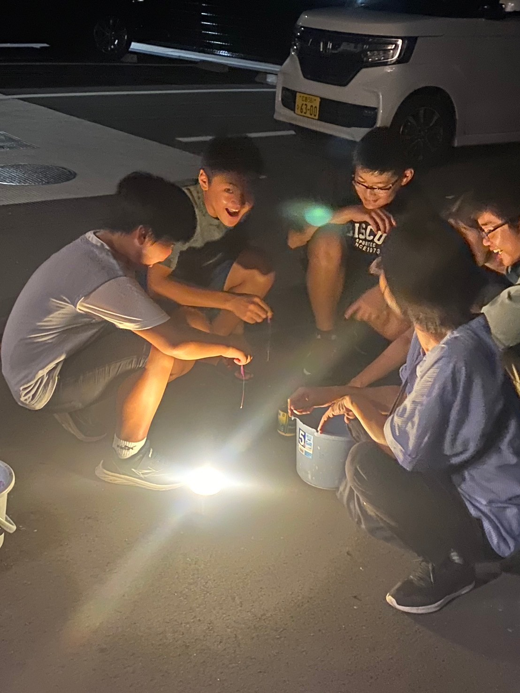
第21回スナッグゴルフ対抗戦JGTOカップ全国大会in三木市のスコア速報は、こちらのQRコードから見ることができます。
競技スタートは11月30日(土)12時から。
メンバーの戦いをドキドキしながらご覧いただけます。
応援よろしくお願いします！！！
応援の色紙 2024.11.23
全国大会に参加する選抜メンバーに部員から心のこもった色紙が渡されました。
コース練習が終わる頃、わざわざ渡しに来てくれたK君、Mちゃん。
悔しい思いもあるけれど、選抜メンバーを応援したい。その思いが成長につながる。次はきっと自分の番。練習はうそをつかない。
みんなの思いが詰まった色紙を持って、みんなの気持ちと一緒に、全国大会に行ってきます！
壮行会 2024.11.18
第21回スナッグゴルフ対抗戦JGTOカップ全国大会in三木市にむけ壮行会が行われました。
選抜メンバー一人一人の気持ちのこもった決意表明。
校長先生からは「必ずしもいい結果が得られないこともある。しかし努力したことに意味がある」とのお言葉。
たくさんの先生方や地域の方に応援され、決意も新たにした部員の頭上には、つながったしかも二重の虹🌈が。
努力はキット報われる、そう思える空模様でした。
第13回スナッグゴルフ東広島小学生大会⛳ 2024.10.19
第13回スナッグゴルフ東広島小学生大会が広島カンツリー俱楽部八本松コースで開催されました。
団体戦優勝は三ツ城Aチーム。4位Bチーム。1,2年生で結成したCチームも7位と頑張りました‼
優勝はキャプテンのO君。カウントバックで惜しくも3位となったR君。5位Yちゃん。
初めて出場した大会の1打目でホールインワンを出したY君。もってるね♪
みんなの成長が見られた嬉しい大会でした！
花火🎇 2024.8.17
夏休み企画第３弾！花火🎇♪
これまた以前は行われていたけどコロナでできてなかった花火♪６年ぶり？くらいの開催です！！
東広島ってまとまった人数で花火をするのはムズカシ😢
そんなつぶやきに、なんとＡちゃんママ＆パパが場所を貸してくれました
準備や片付けまでホントにありがとうThanks!
MHS🏆の参加賞で監督から頂いた花火があっという間に無くなりました。
監督、ありがとうございました！！
カルビッシュ!! 2024.8.17
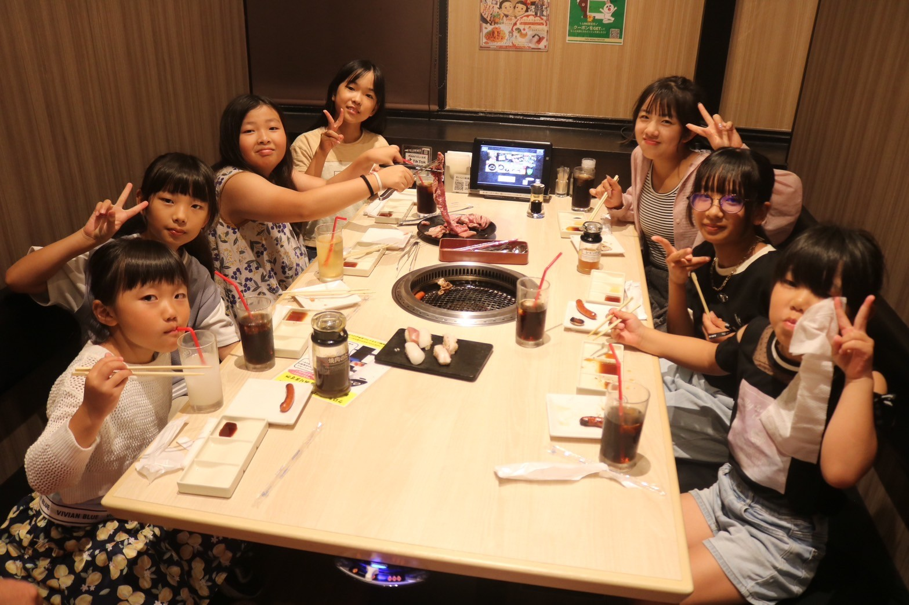
夏休み企画第２弾！カルビッシュでのバイキング&食べ放題♪
以前は行われていた夏休みお楽しみ企画♪
コロ禍を経て５年ぶりの開催です！！
子ども達も保護者も、楽しく美味しい😋一時を過ごすことができました♪
スナッグゴルフ対抗戦MHSカップ🏆交流戦♪ 2024.8.17
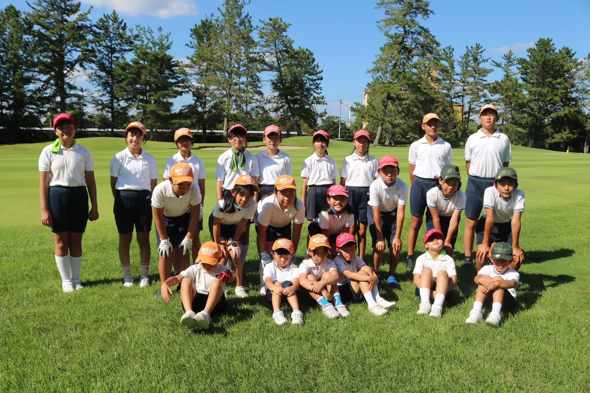
夏休み企画！スナッグゴルフ対抗戦MHSカップ🏆in八本松コースが開催されました
MHSは言わずと知れた三ツ城、東西条、志和。
ライバルがいるから強くなれる。
今回は3校混合チームを結成し、切磋琢磨&協力しながら白熱したプレーが繰り広げられました！
次週の広島県予選を前に調整しつつも、普段ライバル校の選手と絆を育み応援の声が聞こえる楽しい雰囲気での対抗戦でした♪
ご協力くださった広島カンツリー俱楽部八本松様を始め、参加した皆さん、急遽企画してくださった指導者、運営&準備してくれた皆さまに心よりお礼申し上げます。
谷原杯優勝🏆おめでとう♪ 2024.8.4
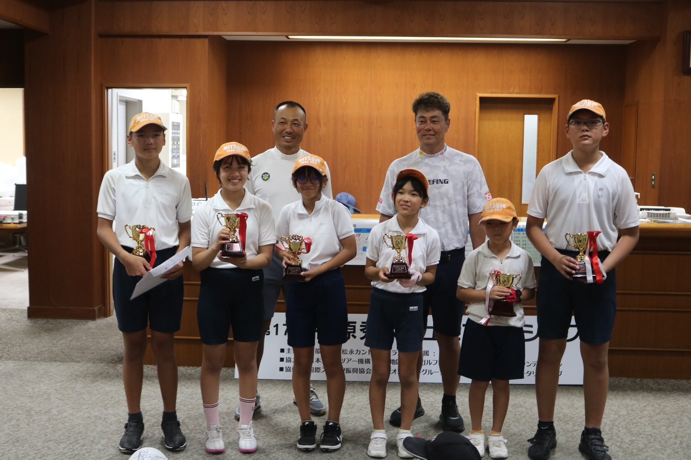
谷原杯(スナッグゴルフ)団体戦優勝🏆！
個人ベストスコアはキャプテンの18🏅！
6ホールを全て2打で回る快挙です！！
アルバトロス賞のO君R君🥉、交流戦優勝のAちゃん！！
暑い中、そして雷雨が近づく中、みんなよくがんばりました💮
夏の大会日程 2024.7.27
夏は大会が目白押し。
7月27日(土)14:30～
東西条さんとの交流戦
@広島カンツリー俱楽部西条コース
8月4日(日)14:30～
第17回谷原秀人ジュニアクラシック・スナッグゴルフ大会
兼第6回広島県予選会
@松永カントリークラブ
8月17日(土)14:30～
東西条さん、志和小さんとの三校合同練習会
@広島カンツリー俱楽部八本松コース
8月24日(土)14:30～
スナッグゴルフ対抗戦第18回広島県予選会
@広島カンツリー俱楽部八本松コース
みんな暑い中、練習をがんばっています。
練習の成果を出せるようにがんばれ～♪
OBOGの皆さん、八本松コースでも試合があります。応援よろしくお願いします！！
スポーツ教室 2024.7.6
 三ツ城自治協議会体育振部会主催のスポーツ教室が、数年ぶりに開催されました。
三ツ城自治協議会体育振部会主催のスポーツ教室が、数年ぶりに開催されました。
当日は暑い中25人もの児童が参加、約10名の子ども達がスナッグゴルフを体験しました。
一番人気はスナッグゴルフジャパン様からお借りしたスナッグアウト♪
全ての的に当たるように、一生懸命プレイしていました。
三ツ城スナッグゴルフ倶楽部は、スナッグゴルフ全国大会連続出場校！
今は少数精鋭の11人で日々練習をしています。
興味のある方、いつでも体験できますよ♪
新年度始動 2024.4.6
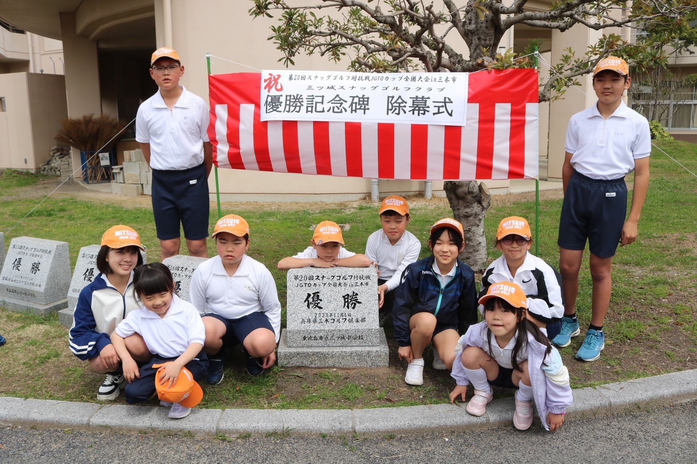
新年度が始まります。
入学、進級おめでとう🌸
みんなにとって、いい年度になりますように。
三ツ城スナッグにはさっそく良い事が✨
可愛い新入生部員が2人も入ってくれました👏
今年は春から縁起がいいゾ♪
みんな大好きYouTube 2024.3
2023年開催 第20回スナッグゴルフ対抗戦JGTOカップ全国大会の動画がアップされました⛳️
前半東日本、後半西日本大会です。
大会の様子をぜひご覧ください😄
東広島市政施行50周年カウントダウン 2024.3.24
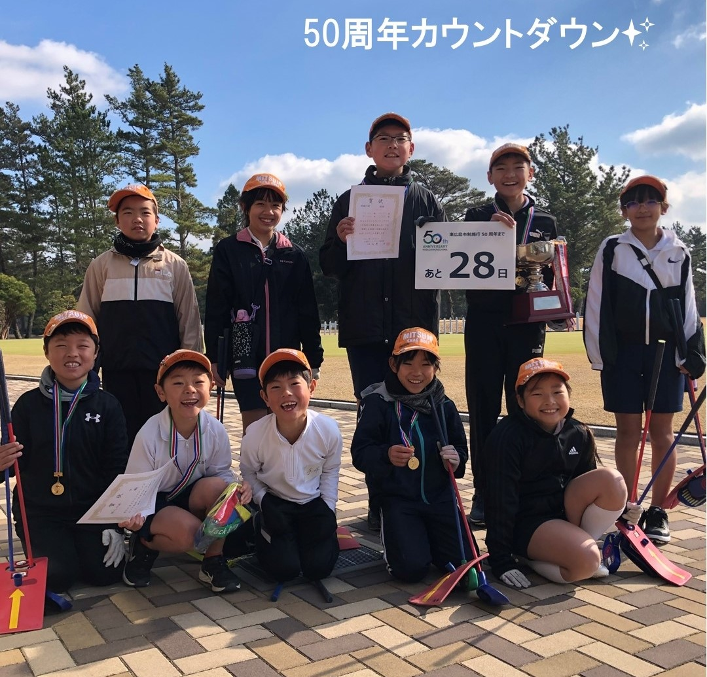
*--*--*--*--*--*--*--*--*--*--*--*--*--
令和6年4月20日の
東広島市50歳の誕生日まで
あと28日！😊
*--*--*--*--*--*--*--*--*--*--*--*--*--
のカウントダウンに参加させていただきました♪
東広島市政施行50周年【公式】Instagramをご覧ください。
表彰式&祝勝会🏆 2024.3.2
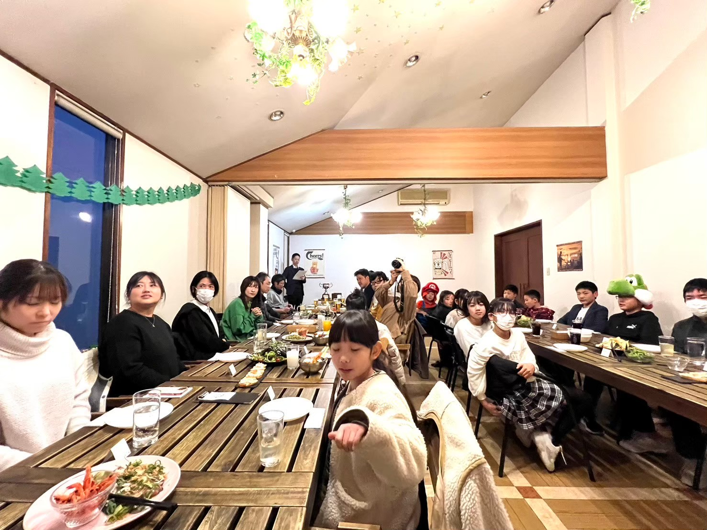
3月最初の土曜の夜。
キャンピングBOSCOで、今年度の表彰式&全国大会の祝勝会が開催されました。
部員も保護者も指導者も、今年度1年本当にお疲れ様でした。
みんなの成長する姿が見れて嬉しかったよ😊
また来年を楽しみにしているね♪
役員のみなさん楽しい会をありがとうございました！
スナッグゴルフ広島県小学生大会 2023.12.26
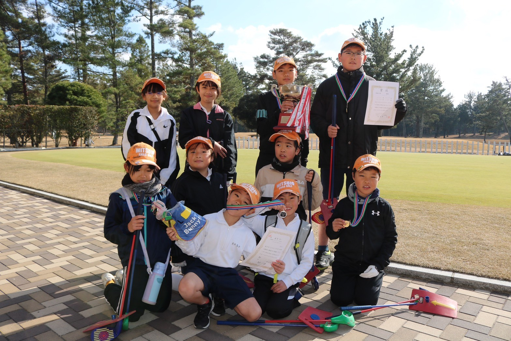
4年ぶりの開催となった本大会。
団体戦優勝 三ツ城小学校Aチーム。
個人戦準優勝 ２年生のS君。
応援&差し入れをくださったS元コーチ、ありがとうございました。
結果がでた人も出なかった人も、今年一年よくがんばりました💮
韓日スナッグゴルフ交流戦 2023.12.9
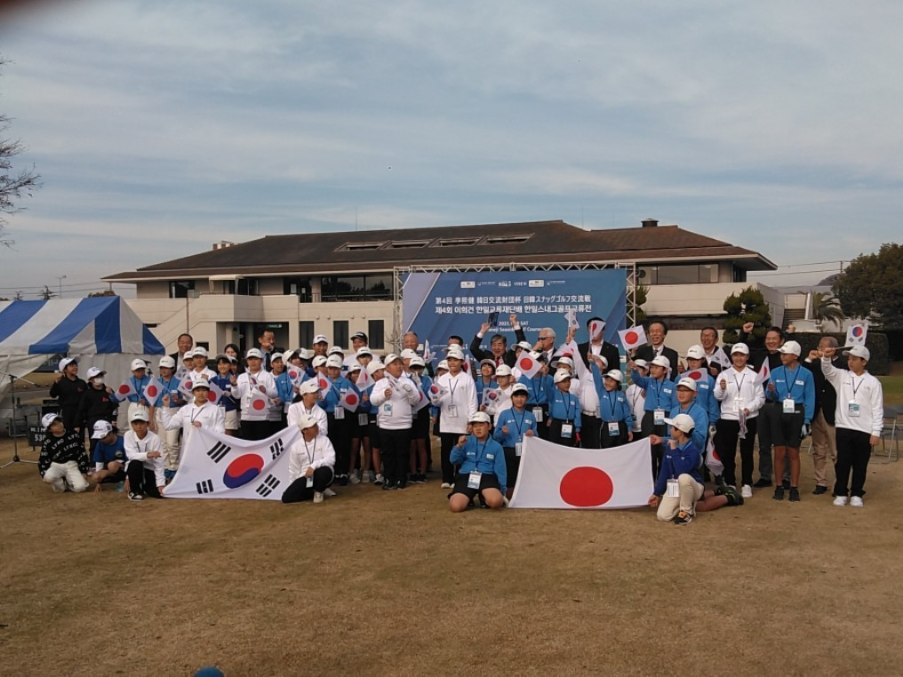
兵庫県姫路シーサイドゴルフコースで、第4回イ・ヒゴン韓日交流財団杯 韓日スナッグゴルフ交流戦が開催されました。
三ツ城スナッグゴルフクラブは、東西条さん、東日本大会の上位2校とともに日本代表メンバーとして大会に出場しました。
結果は・・・
引き分け（上位16人の合計スコア）
まさかの引き分けに、驚く選手たちでした。
ベストスコア賞は、カウントバックにより我らがキャプテン🏆
グリーンジャケット姿がカッコよかった！
副キャプテンも同スコア。超ハイレベルな戦いでした。
大会後は両国選手で異文化交流。食事をしながら特技披露やプレゼント交換で国境を超えた貴重な経験をしました。
イ・ヒゴン韓日交流財団様をはじめ、大会関係者の皆さまに心より感謝いたします。
第20回スナッグゴルフ対抗戦JGTOカップ全国大会in三木市 2023.11.4
 JGTO🏆全国大会団体戦優勝🏆
JGTO🏆全国大会団体戦優勝🏆
赤コース🥇副キャプテンの21ストローク！全国ベストタイ‼
青コース🏅キャプテン&初出場Yちゃんベストスコア賞‼
そして三ツ城ホールインワン王S君の全国大会でのホールインワン賞
全国大会の緊張の中、アンジュレーションのきついコースでも臆せずみんなベストを尽くしてました
すばらしい！よくがんばった！！部員みんなに🏆
全国大会メンバーに選ばれるため部員同士切磋琢磨したよね
みんなで勝ち取った全国大会優勝！わすれないでね。
スコア速報
大会リーフレットはこちら
JGTOキッズゴルフプロジェクト成績はこちら
スナッグゴルフ対抗戦第17回広島県予選会優勝♪♪♪ 2023.8.26
 スナッグゴルフ対抗戦第17回広島県予選会、団体戦優勝🏆
スナッグゴルフ対抗戦第17回広島県予選会、団体戦優勝🏆
個人戦優勝🥇キャプテンの22ストローク！
さらにホールインにアルバトロス！！
2度目の大会参加のＨ君は交流戦優勝。
夏休み、練習&大会とてもよく頑張りました♪
応援に来てくれたOBOG保護者の皆さんありがとうございました！
第12回東広島小学生大会優勝♪♪ 2023.8.22
 東広島小学生スナッグゴルフ大会、団体戦優勝🏆！準優勝！！
東広島小学生スナッグゴルフ大会、団体戦優勝🏆！準優勝！！
個人戦優勝🥇、３～５位。
初めて大会に参加したＨ君も2アンダーでプレー。
確実に上手になってる✊
26日の予選会もこの調子でね！
谷原杯優勝おめでとう♪2023.8.11
 谷原杯(スナッグゴルフ)団体戦優勝🏆！
谷原杯(スナッグゴルフ)団体戦優勝🏆！
個人ベストスコアはキャプテン、副キャプテンの22🏅！
アルバトロス賞🥉、ホールインワン賞🥉、交流戦優勝～3位🎖！！
みんなよくがんばりました。
西山大広プロはさすがの20ストローク！！プロのプレーをまのあたりにし目標を新たにする部員たちでした！！
8月の大会日程 2023.8.10
8月は大会が目白押し。
8月11日(土)14:30～
スナッグゴルフ対抗戦第5回広島県予選会
谷原秀人ジュニアクラシック・スナッグゴルフ大会
@松永カントリークラブ
8月22日(火)9:00～
第12回スナッグゴルフ東広島小学生大会が4年ぶりの開催。
@広島カンツリー俱楽部八本松コース
8月26日(土)14:30～
スナッグゴルフ対抗戦広島県予選会
@広島カンツリー俱楽部八本松コース
選手のみんな～、練習の成果を出せるようにがんばれ～♪
OBOGの皆さん、八本松コースでも試合があります。応援よろしくお願いします！！
第20回スナッグゴルフ対抗戦JGTOカップ全国大会 in西郷村 2023.7.16
 第20回「スナッグゴルフ対抗戦JGTOカップ全国大会 in 西郷村」は多古町立久賀小が優勝！
第20回「スナッグゴルフ対抗戦JGTOカップ全国大会 in 西郷村」は多古町立久賀小が優勝！
優勝スコアは75ストローク。
ドリームチームは圧巻の71ストローク。
谷原杯は8月11日。
どうする、三ツ城！？
JGTOカップ全国大会(外部リンク)
新スローガン 『頂点へ！』2023.4.
新年度。新しい体制のスタートです。
新しいキャプテン、副キャプテン。みんな新学年になって目標も新たにシーズンが始まります。
部員たちが決めた今年のチームスローガンは『頂点へ！』
日本一へ、世界一へ。そしてプレーも態度も気持ちも、目指せ頂点へ！！
卒業おめでとう♪ 2023.3.18
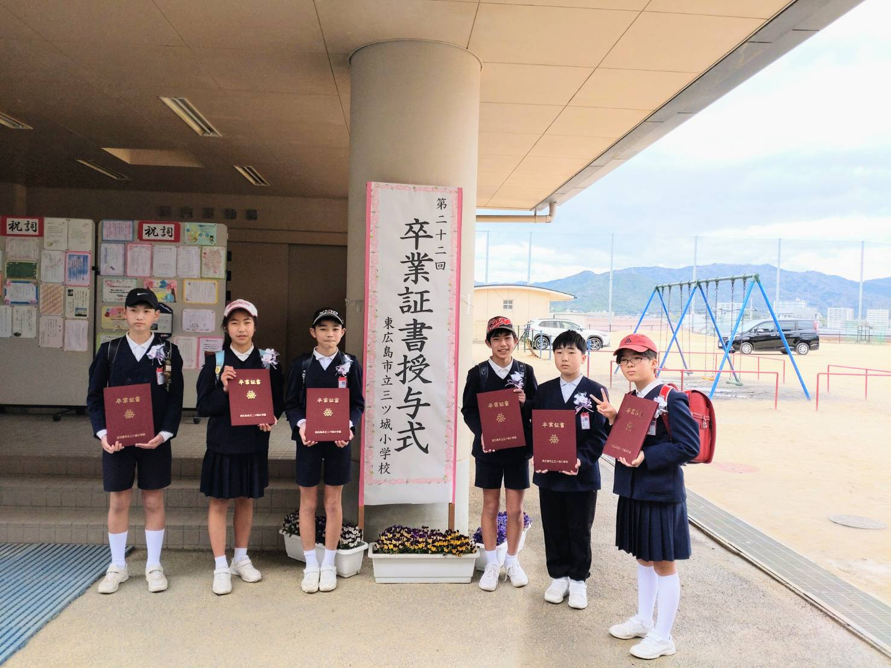
今日、六年生が卒業しました。
嬉しさ半分、淋しさ半分。
一緒にスナッグゴルフができて楽しかったよ。
またいつでもプレーしに来てね。待ってます♪
6年生を送る会 2023.3.4
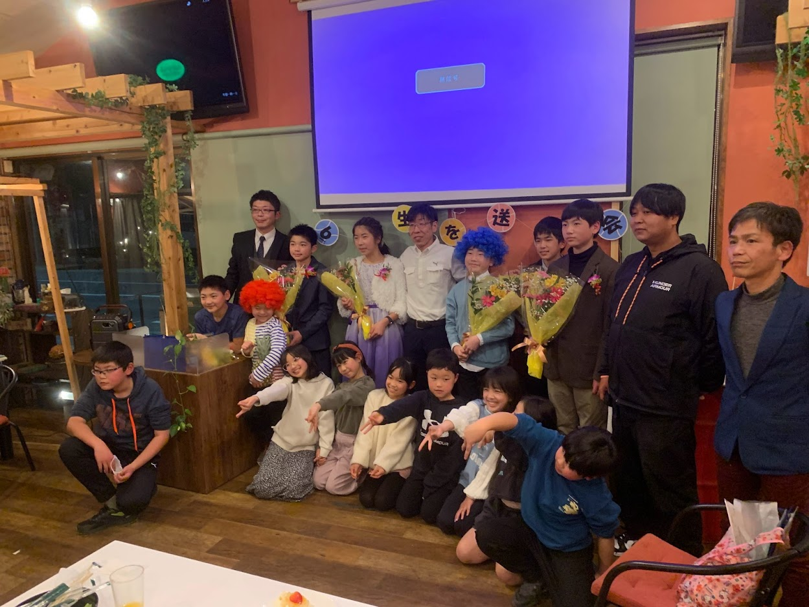
お世話になった6年生ももうすぐ卒業。
コース練習の後に、六年生を送る会が開かれました。
体も心も大きくステキに成長した六年生たち。
たくさんの思い出を胸に、次のステージへ！！
第19回スナッグゴルフ対抗戦JGTOカップ 2023.2.9
全国大会の動画がアップされていました⛳️
大会の様子をご覧ください😄
X’mas ボーリング大会 2022.12.24
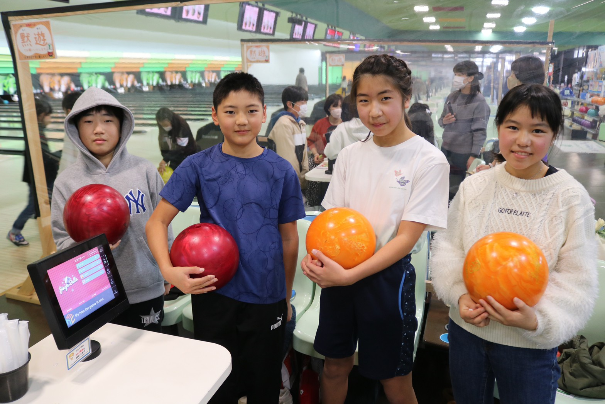
クリスマス杯を行う予定のこの日。大雪の影響でスナッグは中止。代わりにXmasボーリング大会をしました。
初めてのボーリングにわくわく♪ドキドキ♪♪の子ども達も。昔は上手だった？指導陣やパパママも一緒にボーリングを楽しみました。
1位から順にプレゼント交換♪
何が入ってたかな!?
今年もよくがんばりました！
みなさま、良いお年をお迎えください！！
初のスナッグアウト大会♪ 2022.12.17
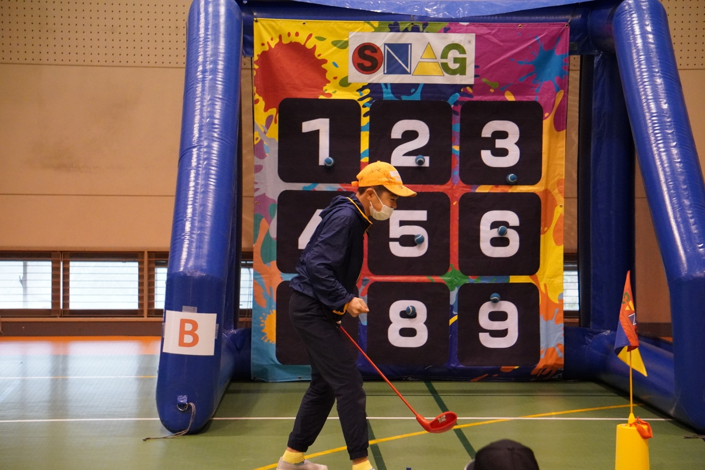
シャープ福山スポーツセンターで、初のスナッグアウトでの大会イベントが開催されました。
スナッグゴルフでストラッグアウトをするスナッグアウト。
パーフェクトを達成した三ツ城部員はなんとのべ6人！
個人戦、チーム戦で大活躍の選手たち。
所属に関わらず他校との混合で編成されたチーム戦では、得意・不得意を話し合って作戦会議。
その結果、個人戦よりもたくさんパーフェクトを達成し、他校との交流や友情が生まれた大会でした。
企画・運営をしてくださった事務局の皆様、本当にありがとうございました。
またお願いします！！
スポラブ 2022.12.6
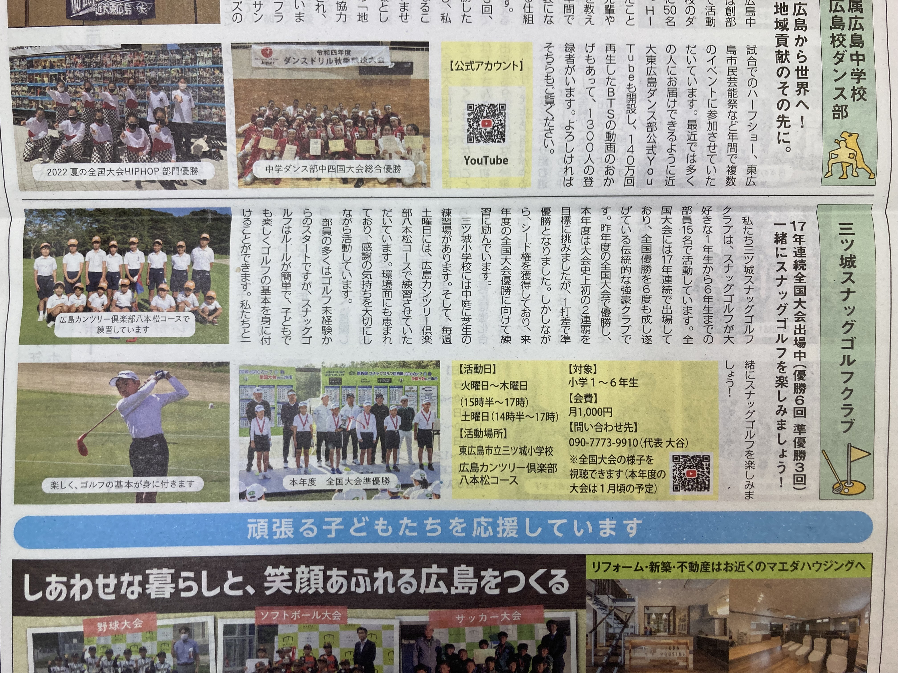
三ツ城スナッグゴルフクラブが地域ジュニア応援新聞スポラブで紹介されました。
なんと部費は月1,000円
部員の多くはゴルフ未経験からのスタート。
一緒にスナッグゴルフを楽しみましょう！
只今、部員募集中です。
全国大会in三木市準優勝 2022.10.29
 JGTOカップ全国大会in三木市、三ツ城スナッグゴルフクラブ準優勝。
JGTOカップ全国大会in三木市、三ツ城スナッグゴルフクラブ準優勝。
優勝校との差は1ストローク。
自分の１打で負けた全国。悔しいです。
優勝校の塩屋北さんは、予選会1打差で2位。全国大会では1打差で勝利！
負けたという事は、相手よりも準備が足りなかったということ。
気持ちに隙があったこと。
甘えていたこと。
唯一の吉報は初出場Y君の赤コースベストスコア賞と、アルバトロス賞、ホールインワン賞。
全国大会には魔物がいる。勝利の女神を振りむかせるには！？
スコア速報 2020.10.29
大会関係者のご尽力により、JGTOカップ全国大会in三木市のスコア速報が確認できます。
頑張っている選手のスコアを臨場感あふれる速報で。
プレー中もご覧いただけます。
スタートは10月29日(土)12:00から。
お時間のある方応援よろしくお願いします。
※2020年のスコア速報は終了しました。
大会パンフレットはこちら
JGTOキッズゴルフプロジェクト成績はこちら
プレスネット 2022.10.25
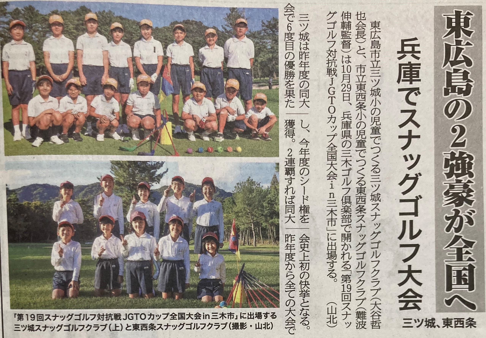
三ツ城スナッグゴルフクラブと東西条スナッグゴルフクラブがプレスネットに掲載されました。
昨年のJGTOカップ全国大会の優勝校と準優勝校。
今年はどんな戦いが繰り広げられるのか。こうご期待♪
壮行会 2022.10.24
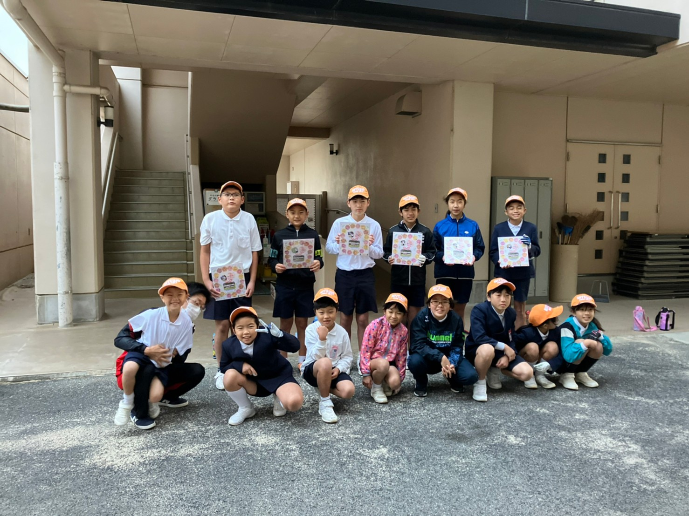
校長先生、主幹先生、監督、コーチ、部員が参加して壮行会が開催されました。
三ツ城の代表として プレーも素行も 未踏の2連覇目指して 優勝カップを持って帰ります‼
応援動画『決戦の日』ありがとう♪
みんなの思い、受け取ったよ！
優勝二連覇して帰って来ます‼
H先輩頑張れ♪ 2021.9.11
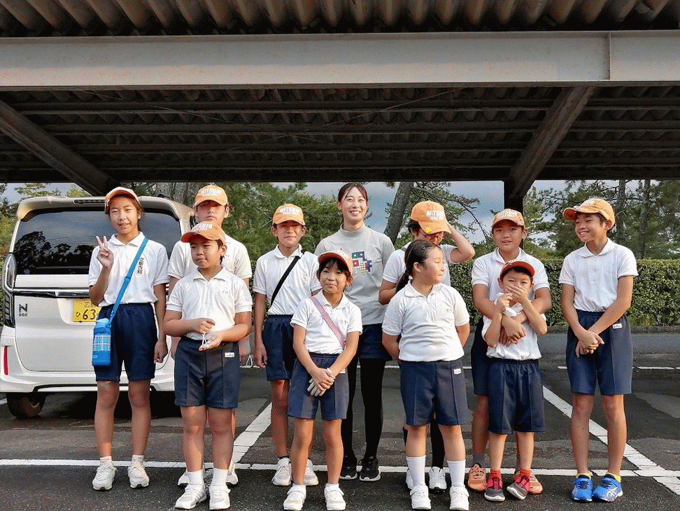
三ツ城スナッグゴルフクラブのH先輩がプロテストを受けます。
先輩からの意気込み。キャプテンからの激励‼
監督のムチャぶりを難なくクリアする先輩。ハート♡の強さがさすがです！
H先輩、プロテスト頑張れ！
三ツ城スナッグゴルフクラブ、全国二連覇頑張れ！！！
プロテスト2次予選C地区の結果はこちら
16回広島県予選会で優勝しました！ 2022.9.3
 キャプテンの凛々しくカッコいい選手宣誓で始まった予選会。
キャプテンの凛々しくカッコいい選手宣誓で始まった予選会。
谷原杯は1ストローク差での優勝！今回はなんと同スコアでの優勝です‼
上位3名の合計スコアは2位チームさんと全く一緒。5人目のカウントバックによりギリギリの優勝です。
Nちゃんのスコアのおかげで優勝したよ！♪
自分の1打の大切さが身につまされた優勝。
改善点いっぱい見つかったね。
もっと上手く強くなるチャンス♪♪
全国大会ではもっと上手くもっと強くなったみんなの勇姿を見せてくれると信じてます！！
頑張れ三ツ城！目指せ二連覇！！
谷原杯兼広島県予選会で優勝しました！ 2022.7.31
 団体の部優勝 東広島市立三ツ城小学校 72ストローク！
団体の部優勝 東広島市立三ツ城小学校 72ストローク！
ベストスコア賞、交流の部ベストスコア賞、アルバトロス賞、ホールインワン2名！
初めて出場の交流戦参加の部員たちも自己ベスト続出！！
暑い中、みんなよく頑張りました！！！
キャプテンの凛々しい選手宣誓で波に乗ったね♪
ベストスコア賞の2人はなんと谷口プロと同スコア♪
プレー後のサインと写真は宝物だね♪♪
2年連続谷原杯優勝おめでとう！！！
谷原杯＆予選会のメンバーが発表されました 2022.7.20
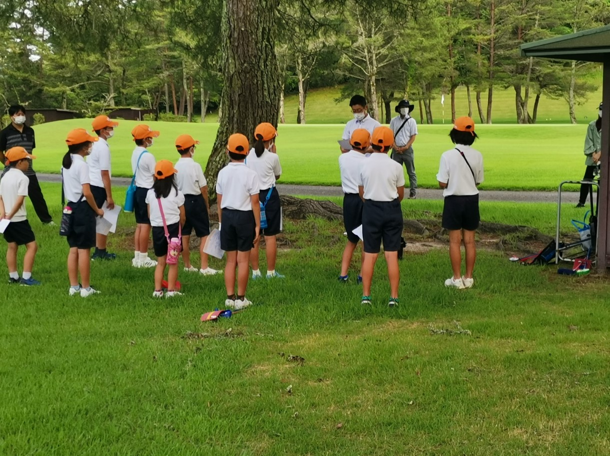
スナッグゴルフ対抗戦 広島県予選会 谷原秀人ジュニアクラッシック・スナッグゴルフ大会＆予選会の団体戦メンバー6人が発表されました。
6年生と4年生を中心に、予選会に臨みます！
全国大会メンバーはまだ決まらないほどの大激戦！
団体戦も交流戦も、優勝めざして頑張れ!!
仲間であり良きライバル！みんなでレベルアップしていこうね♪
大会初参加の低学年ももちろんガンバるみんなを応援しています！！！
JGTOカップ全国大会in西郷村 2022.7.17
新型コロナ感染症の影響で2020年は中止となった全国大会。昨年より東日本エリアと西日本エリアに分かれて、開催されています。開催してくださる大会関係者の皆さまに感謝‼
第19回スナッグゴルフ対抗戦JGTOカップ全国大会in西郷村が7月17日に開催されました。
東日本大会優勝は茨城県の笠間市立友部小学校で79ストローク!
１位から９位までが一打差の接戦！一打一打の大切さを実感する結果です。
宮里優作プロひいきるJGTOドリームチームは貫禄の73ストローク!!
ドリームチームのベストスコア賞は増田伸洋プロの23ストローク‼
予選会はいよいよ７月31日‼
何を感じ、考え、どう行動する？？
かんゴル、楽しみ♪楽しんで♪♪
JGTOカップ全国大会 2022.7.3
今年の『第19回スナッグゴルフ対抗戦JGTOカップ全国大会』は、昨年に続き東日本と西日本の2会場に分かれての開催です。
我らが広島県予選会は7月31日と9月3日。
東日本の予選会は終わり、22の出場校が7月17日の全国大会in西郷村で熱い戦いを繰り広げます。
東日本予選会でのベストスコアはなんと22ストローク！
西日本予選会に向けて、三ツ城のみんなは何を考えどう戦う？
JGTOカップ全国大会(外部リンク)
新年度スタート♪ 2022.4.9
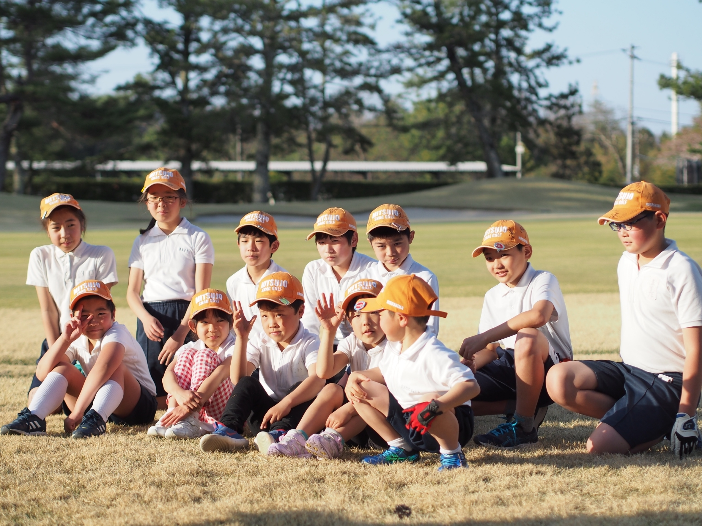
新年度がスターとしました。
新しい学年、新しい体制でのスタートです。
新年度初めてのコース練習で自己ベスト21を叩き出したR君！
チーム目標は2連覇‼
そのために、部員一人一人、どんな目標をたててどう達成する！？
6年生を送る会♪ 2022.3.12
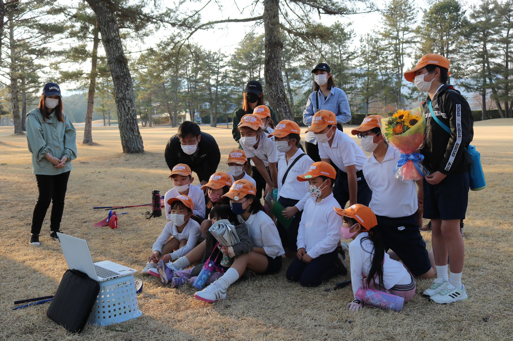
今日は6年生Ｎキャプテン最後のコース練習。
コースで６年生を送る会をしました。
コロナじゃないころは、ステキな会場でドレスアップして送る会をしていたのですが、そうもいかずＴＴ
でも思い出のコースで、みんなで『卒業おめでとうMOVIE!』を見て、花束🌸、色紙に記念品、贈る言葉で温かくお祝いしました♪
Ｎちゃん、また来てね♪
三ツ城杯の表彰をしました🥉 2022.3.12
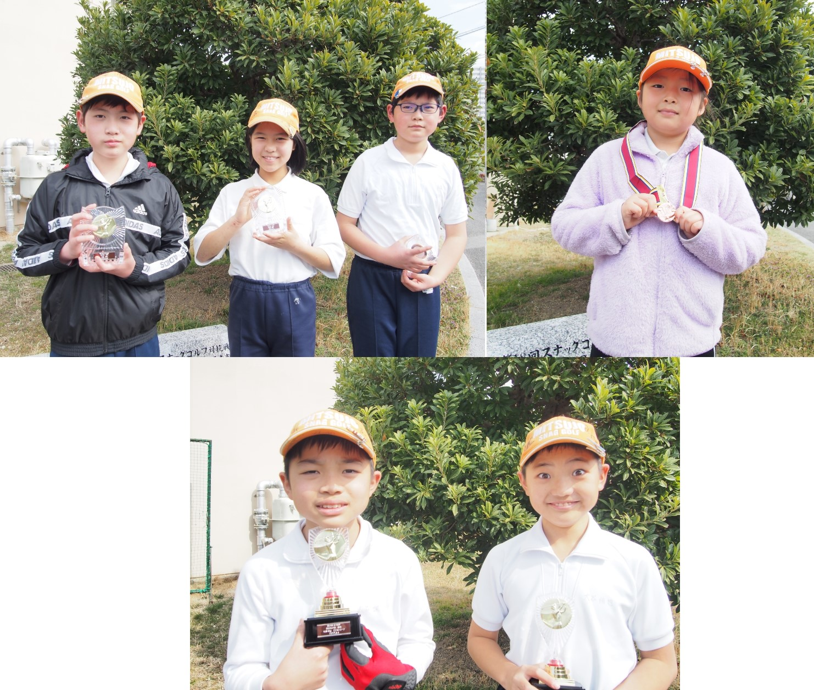
三ツ城杯の表彰が行われました。
団体優勝、個人優勝🏆
低学年のニアピン賞には、Aちゃん！
ステキな顔の勝者たちでした。
除幕式を行いました 2022.3.12
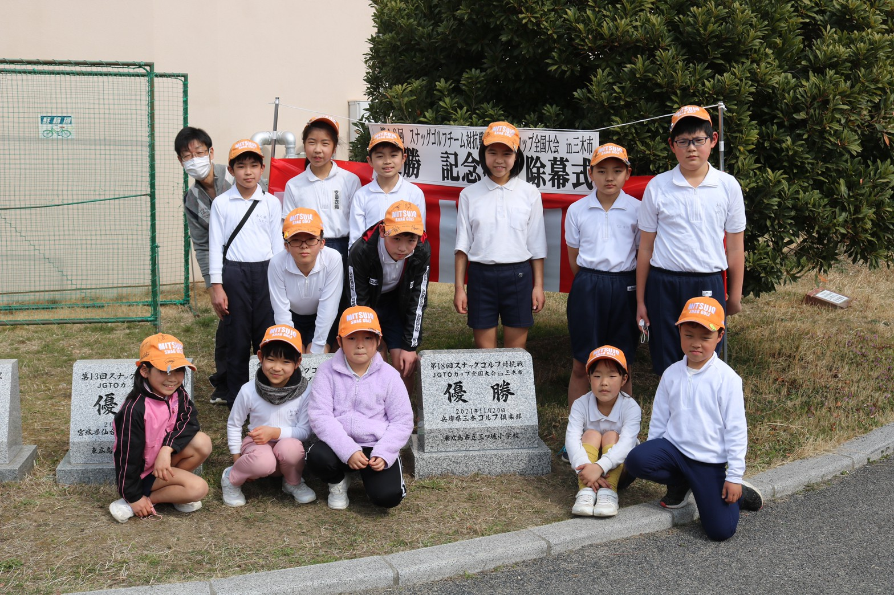
三ツ城小学校の西門を入るとすぐに、７つの石碑があります。
それはなんでしょう？
な、な、なんと！スナッグゴルフクラブ全国優勝の石碑です！！
裏には選手や監督、コーチの名前も♪
キミも石碑に名前を残してみよう！！
三ツ城杯🏆 2022.3.5
 毎年恒例の三ツ城杯が開催されました！♪
毎年恒例の三ツ城杯が開催されました！♪
団体優勝はNちゃん、Y君、R君チーム。
ドラコン、ニアピン、ベストスコア、ホールインワンにアルバトロス賞！
大人もS先輩も負けじとプレー。
親子でスナッグ、楽しめたね♪
アザレア賞を受賞しました 2022.2.23
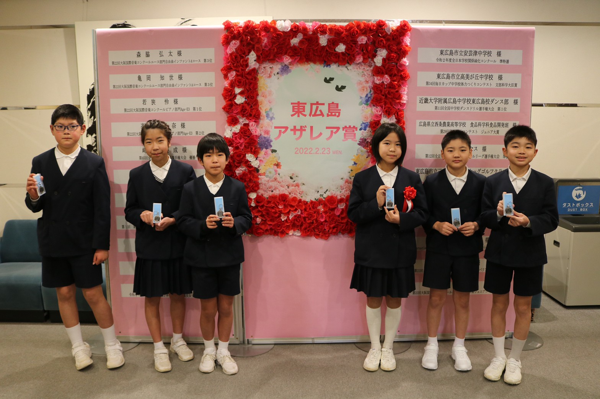
三ツ城スナッグゴルフクラブは東広島アザレア賞を受賞しました♪
授賞式には6名が出席しましたが、部員全員で取ったアザレア賞。
アザレアの花言葉は「青春の喜び」
嬉しい思い出の一ページになったね♪♪
みんな大好き♪YouTube 2022.2.9
第18回スナッグゴルフ対抗戦JGTOカップ全国大会の様子がYouTubeにアップされました。
全国大会ってこんな感じなんだ～。
有名プロともたくさんプレーできる♪
楽しそう♪♪
シード権獲得！また来年、全国に勝ちに行くぞ‼
プレスネットに掲載されました 2022.1.18
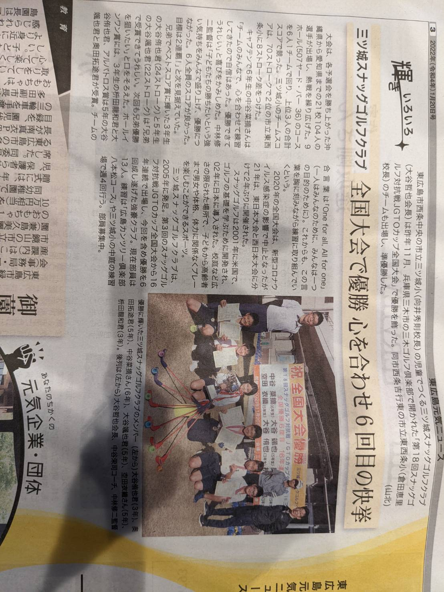
JGTOカップ全国大会in三木市での優勝記事がプレスネットに掲載されました。
「みんなで心を合わせて練習してきた成果」
合言葉は「One for all, All for one」
6度目のJGTOカップ全国優勝‼
一緒に全国優勝を目指しませんか？
部員募集中です！
あけましておめでとうございます♪ 2022.1.1
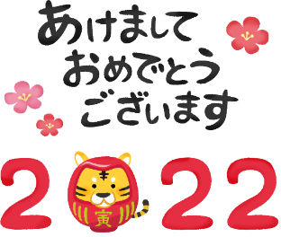
新年あけましておめでとうございます。
2連覇目指して、みんなで楽しみながら練習していきましょう♪
と思っていたところ、蔓延防止等重点措置が発令TT。
学校での練習はできず、自主練の日々です！
会長からのチャートでかんゴルして。
パワーアップしたみんなにまた会えるのを楽しみにしています♪
クリスマスイベント♪ 2021.12.25
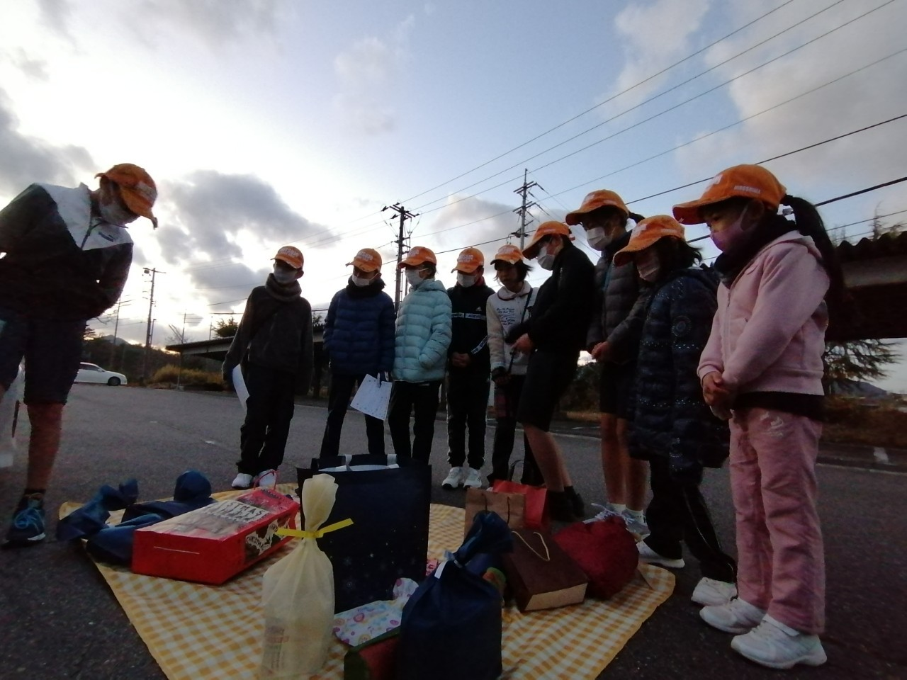
クリスマスイベント&月例杯⑤を行いました。
幼児から中学生、保護者も一緒にプレー♪
1位のO(Y)君から順にプレゼントを選んでいきました。
プレゼント、何が入っているかな？
楽しみだね♪
サプライズプレゼント♪ 2021.12.25
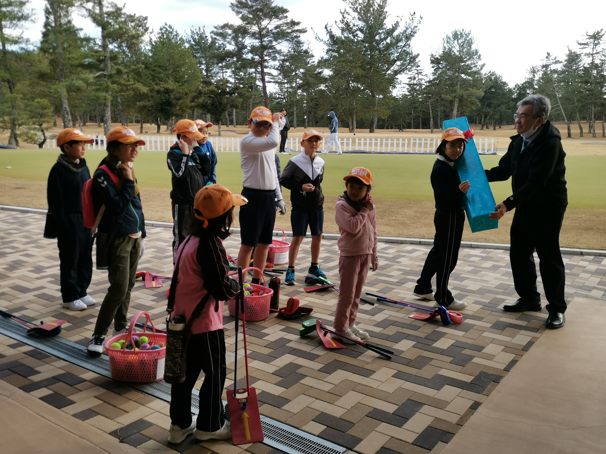
コース練習前に広島カンツリー俱楽部八本松コースさんからサプライズプレゼントを頂きました♪
毎週土曜日に練習させていただくだけで本当にありがたいのに、優勝のお祝いまで。感謝してもし足りません！！
優勝のお祝いとして頂いた赤ランチャー、赤ローラー。
大切に使わせていただいて、２連覇目指します！！
中国新聞に掲載されました♪ 2021.12.21
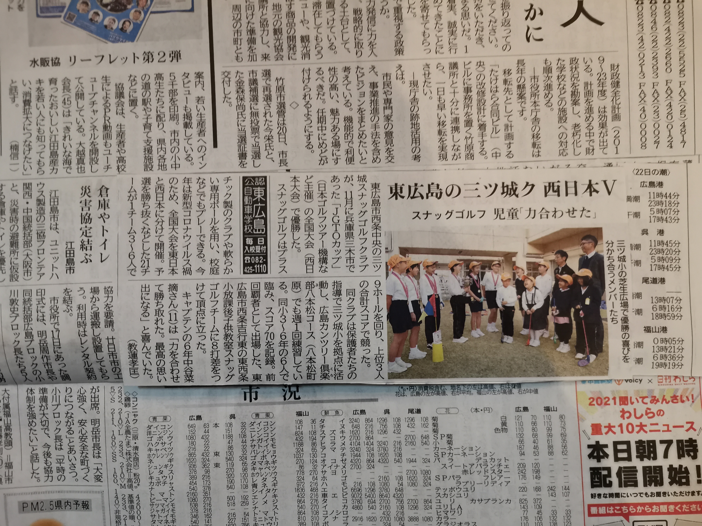
新入部員も加わって、和やかな雰囲気の写真♪
いい思い出になったね！
体験会♪ 2021.12.11
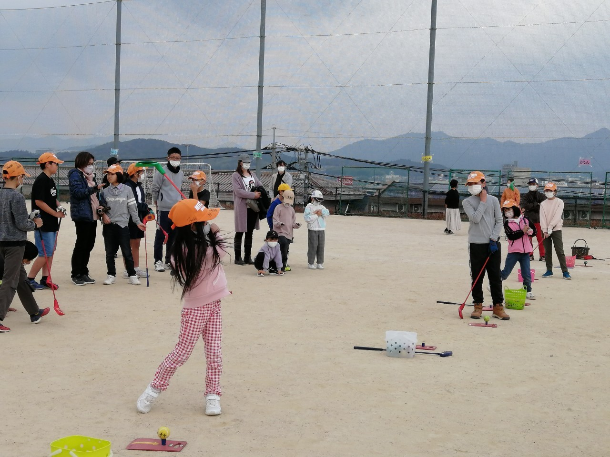
スナッグゴルフの楽しさを知ってもらうため体験会を行いました。
1年生から中学生、保護者も一緒にプレー♪
遠くまで飛ばすぞゾーン、くっつけるゾーン、コースにチャレンジゾーン。
楽しんでる参加者に、上手に説明する部員達！
体験後すぐに入部してくれたK君。
いっしょにスナッグ楽しもうね♪
優勝報告会 2021.12.4
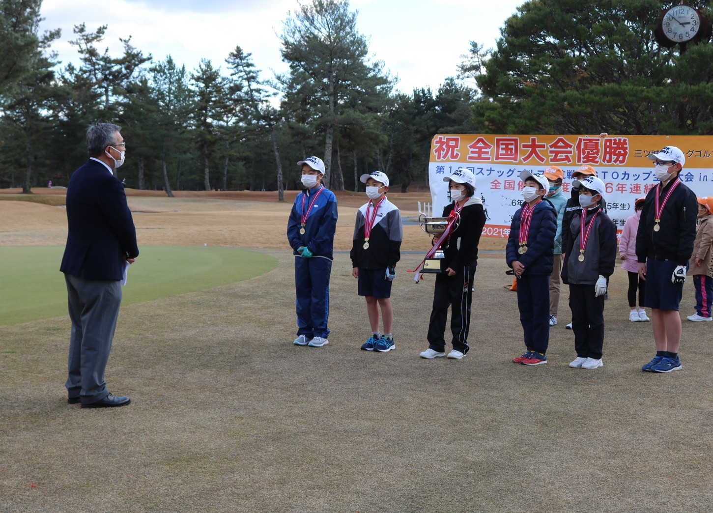
毎週土曜日コースを利用させていただいている広島カンツリー俱楽部八本松コースさんへ優勝の報告をしました。
優勝したのは選手の頑張りはもちろん、国内屈指の名門コースで練習をさせて頂いているお陰です。
報告会後は梅田支配人&三ツ城スナッグゴルフクラブの先輩でもある岡本選手と一緒にプレー。
お祝いまでいただきました。
広島カンツリー俱楽部八本松コース様、梅田支配人、岡本選手、本当にありがとうございました！
祝勝会♪ 2021.12.4
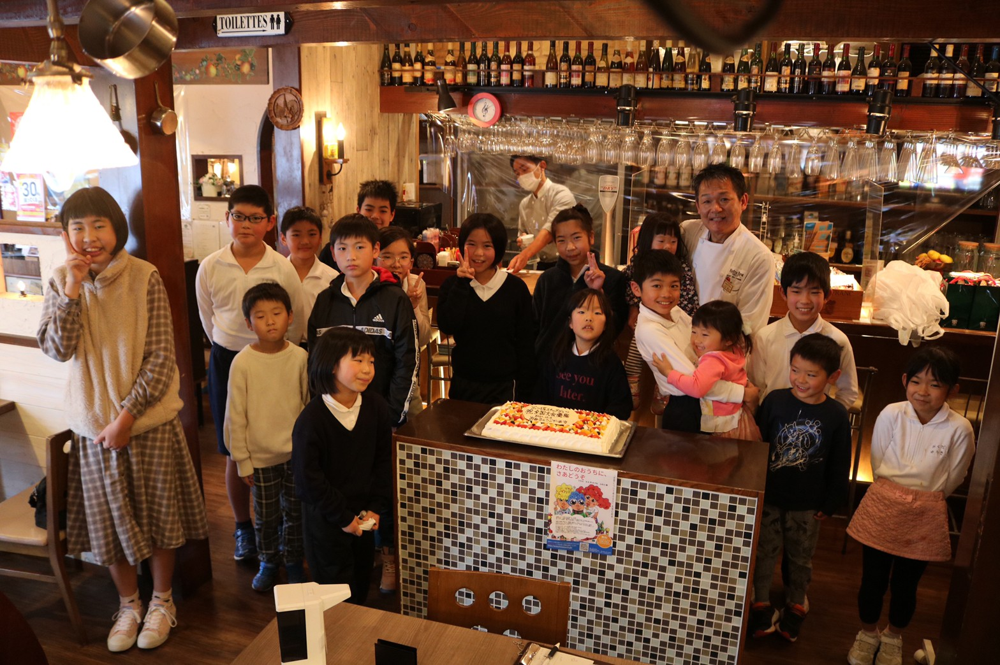
第18回スナッグゴルフ対抗戦JGTOカップin三木市の祝勝会が行われました。
本当なら夜に宴を行いたいところ。でも新型コロナウイルス対策のため、ランチ会で我慢です(T_T)
監督(前監督からの言葉も)、コーチからありがたいお話をいただき、会長の全国大会の写真プレゼン、先輩からのお手紙、選手から一言。
サプライズケーキと飲み物のサービスもいただき、嬉しい祝勝会でした♪
ビストロパパさん、N先輩、ありがとうございました(^_^)
全国大会優勝おめでとう！！ 2021.11.20
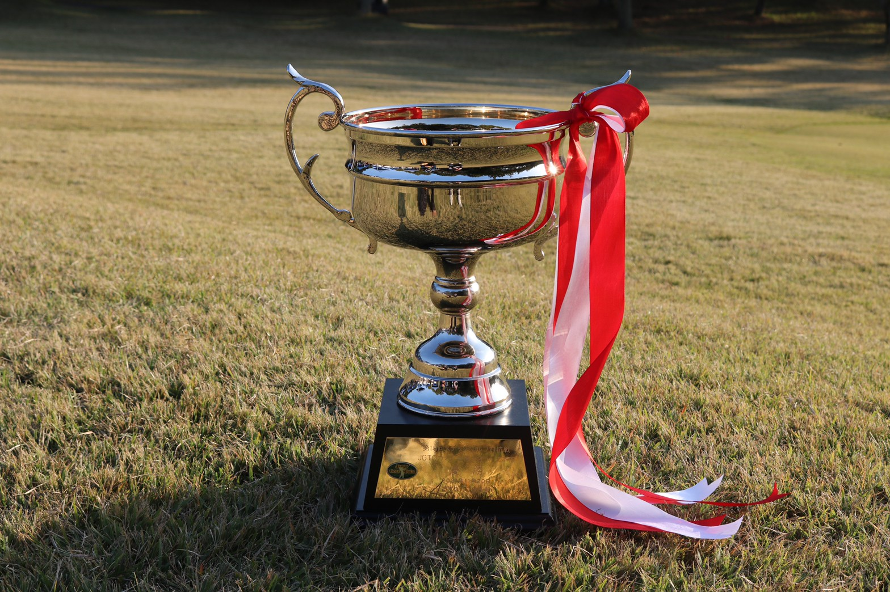
11月20日(土)兵庫県三木ゴルフ倶楽部で開催された『JGTOキッズゴルフ応援プロジェクトsupported by リシャールミルジャパン基金』第18回スナッグゴルフ対抗戦JGTOカップin三木市で優勝することができました！
これまでの練習の成果だね！よくがんばりました！！
部員全員の思いを力に、皆でつかみ取った優勝です。本当におめでとう(^_^)
いつも練習をさせて頂いている広島カンツリー俱楽部様、指導者、先輩方、保護者の皆さま・・・
そして新型コロナウイルス感染症のため昨年度は開催できなかった大会を、子どもたちのために開催してくださった関係者の皆さまに心より感謝‼いたします。ありがとうございます！
『全国大会出場おめでとう！めざせ優勝！！』 2021.10.13
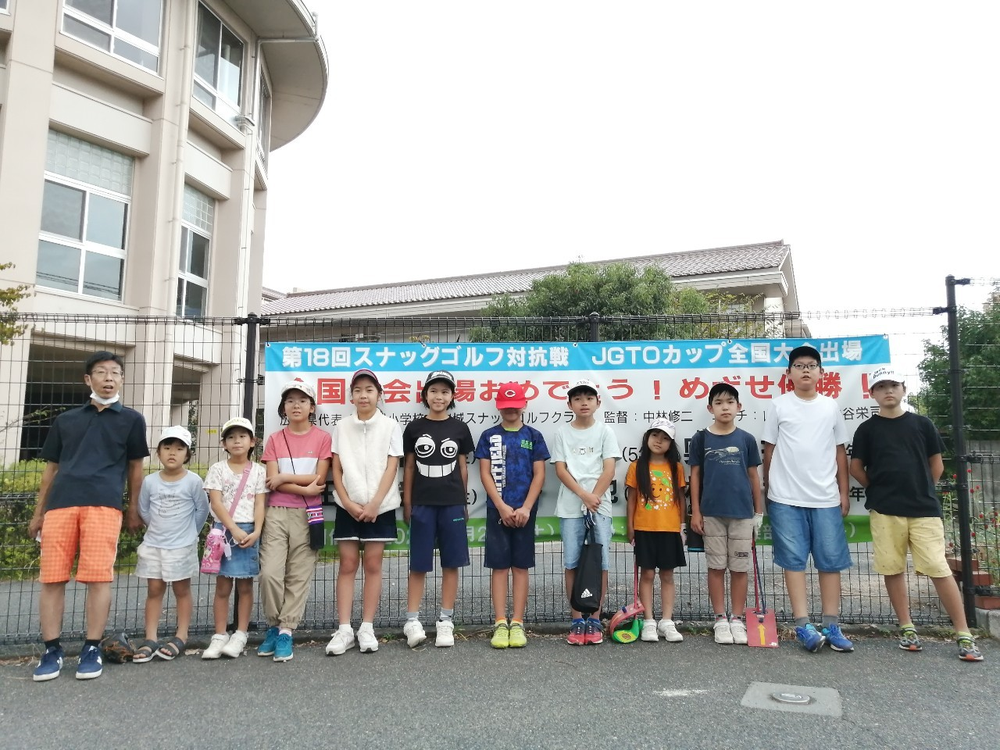
横断幕の前で写真を撮りました。
出場メンバーは、他のメンバーの分まで頑張れ！
他のメンバーは来年メンバーになれるように頑張れ！
目指せ優勝!!
応援しています♪
月例杯復活！ 2021.10.5
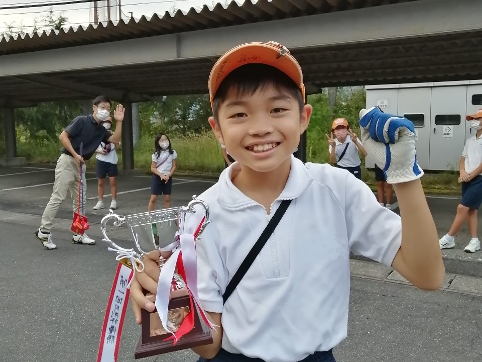
月例杯が始まりました。
今年は優勝カップを授与！
第1回の勝者はO君で22ストローク!!
月例杯ポイントがモチベーション！？
ホールインワンもたくさん出たね！
次はキミの番だ!!^_^
第15回広島県予選会で優勝しました！ 2021.8.28
 団体の部優勝 東広島市立三ツ城小学校 72ストローク！
団体の部優勝 東広島市立三ツ城小学校 72ストローク！
ベストスコア賞、交流の部ベストスコア賞、アルバトロス賞！！
キャプテンの凛々しい選手宣誓で波に乗ったね♪。
蔓延防止→緊急事態でみんなで練習できない中でがんばりました♪♪
夏休み最後の最高の思い出ができたね！！
予選会、連続優勝おめでとう！！
感謝の寄せ書き 2021.8.7
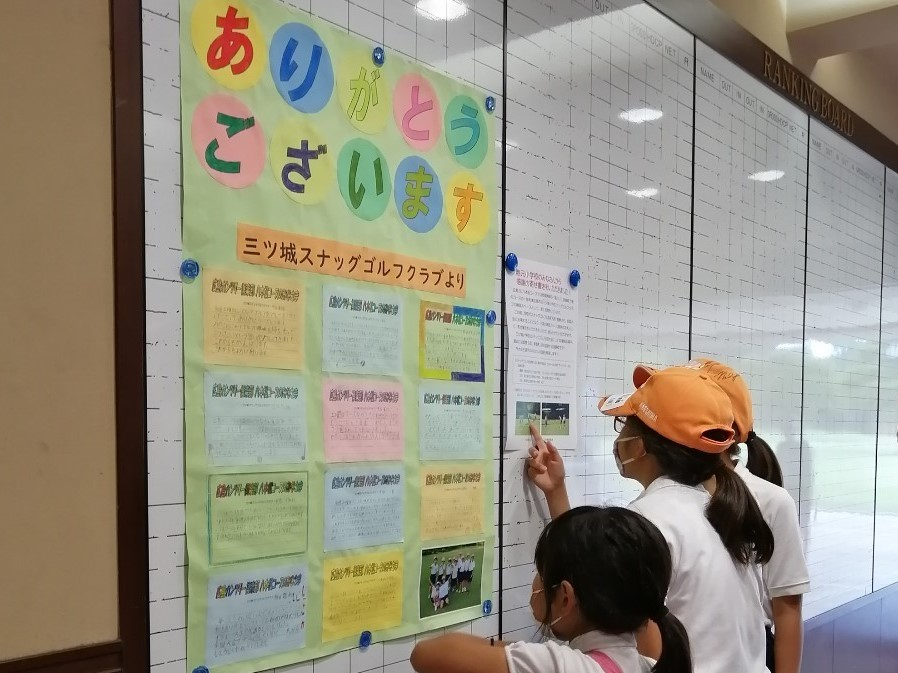
毎週土曜日、広島カンツリー俱楽部八本松コースの一部で、スナッグゴルフの練習をさせていただいています。
いつも練習をさせていただいている感謝の気持ちと、全国大会in三木出場決定のご報告も兼ねて、部員たちから感謝の寄せ書きを送らせていただきました。
広島カンツリー俱楽部はプロトーナメントも開催される言わずと知れた名門ゴルフコース。そんな恵まれた環境で練習ができるので、技能が上達し、全国大会へ出場することができました。
日頃からのご協力に、深謝申し上げます。
早速、寄せ書きをクラブハウス入り口に掲示して頂き、更に士気を上げる部員たちでした。
三ツ城オリンピック 2021.8.7
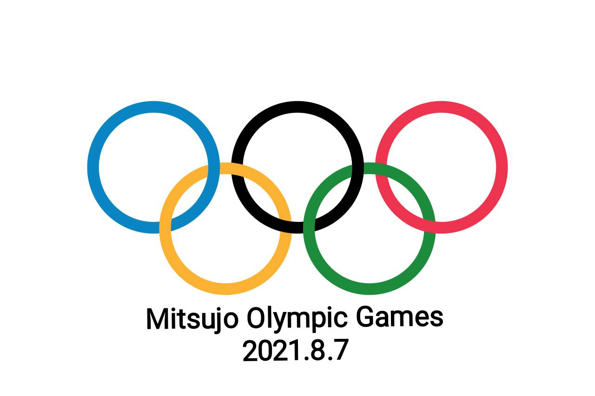
東京オリンピックゴルフ女子で稲見萌寧プロが銀メダルに輝いたこの日、三ツ城スナッグゴルフクラブでもオリンピックを開催しました。
OB、OGを含め総勢24名が、金銀銅メダル(保護者はビールとおつまみメダル)を目指して白熱した戦いを繰り広げました。
途中、東京オリンピック同様、雷雨接近で中断”ＴＴ”
先輩たちの卓越したプレーと、”教えて！先輩！！”に丁寧に答えてもらい、お盆休み前の有意義なひと時を過ごせました。
「先輩、また一緒にプレーしましょう！！」
校長先生に報告しました 2021.8.4
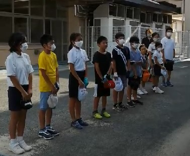
JGO全国大会西日本の切符をつかみ取ったことを、校長先生、主幹先生に報告しました。
いつもグランドや中庭を使わせっていただき、ありがとうございます！
全国大会でも優勝できるように頑張ります！！
校長先生からは、全国大会でもがんばれ、と励ましのお言葉をいただきました。
谷原杯兼広島県予選会で優勝しました！ 2021.8.1
 団体の部優勝 東広島市立三ツ城小学校 72ストローク！
団体の部優勝 東広島市立三ツ城小学校 72ストローク！
ベストスコア賞、交流の部1位、2位、3位。アルバトロス賞2名！！
暑い中、みんなよく頑張りました！！！
全国大会の切符をつかみ取ったね。
谷原プロを始めドリームチームの登場にも大興奮！
ほんとうにおめでとう！！！
安芸カントリー俱楽部で練習してきました 2021.7.31
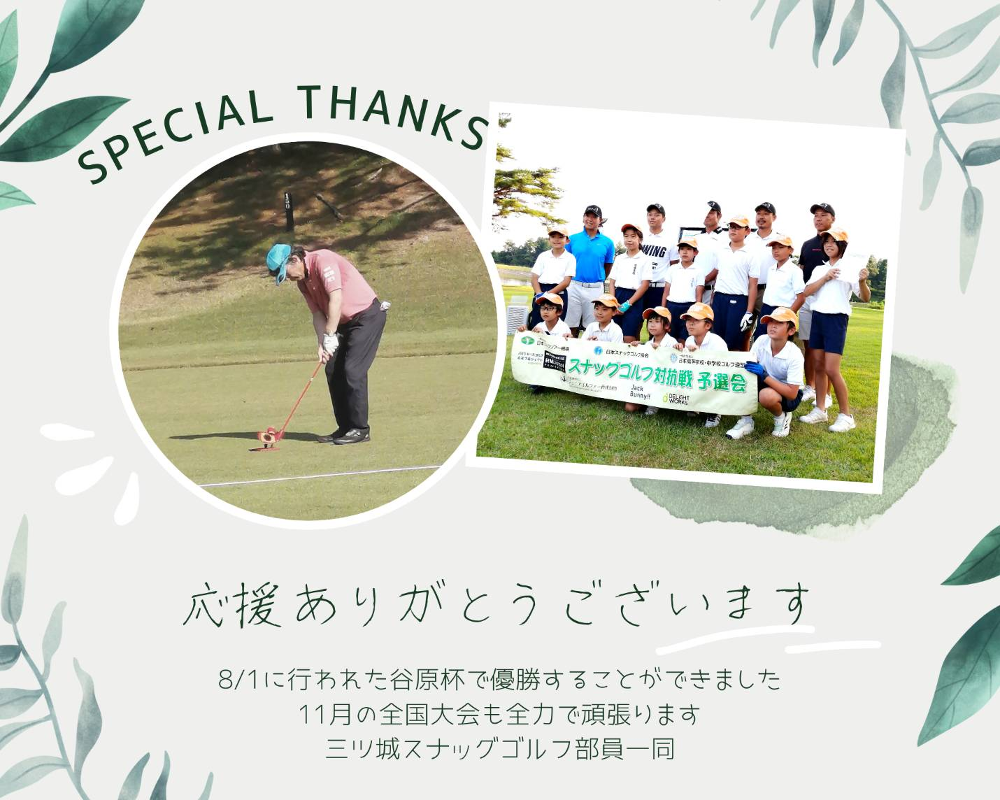
明日は谷原杯兼広島県予選会。
入野郵便局長さんのお取り計らいで、安芸カントリー俱楽部で前日練習をさせて頂きました。
いつも練習をさせて頂いている八本松コースさんはもちろん、安芸カントリー俱楽部さん、入野郵便局長さんには感謝しかありません。
入野郵便局長さんも飛び入り参加してくださり、アンジュレーションのきついコースで貴重な練習をすることができました。
明日の予選会、全国大会への切符を目指して頑張るぞ！
JGTOカップ全国大会in西郷村 2021.7.17
第18回スナッグゴルフ対抗戦JGTOカップ全国大会in西郷村が2年ぶりに開催されました。
昨年は新型コロナウィルス感染症の影響で大会が中止となり、悔しい思いをした部員たち。
今年は、東日本大会（福島県西郷村）と西日本大会（兵庫県三木市 11月20日（土）予定）の2回に分けての開催です。
開催関係者、協賛の皆様に感謝！！
東日本大会優勝は茨城県の常陸大宮市立大宮小学校で76ストローク!
宮里優作プロひいきるJGTOドリームチームは貫禄の72ストローク!!
西日本の予選会はいよいよ8月1日から。
何を感じ、考え、どう行動する？？
かんゴル、楽しみ♪楽しんで♪♪
谷原杯のメンバーが発表されました 2021.7.10
スナッグゴルフ対抗戦 広島県予選会 谷原秀人ジュニアクラッシック・スナッグゴルフ大会の団体戦メンバー6人が発表されました。
メンバーからの決意表明。「自分の1打はチームの1打！」「メンバーを思い」「1打1打を大切に」「1パットで決めて」「自己ベストを出して」「優勝目指してがんばります！！」
他の部員や先輩の思いを胸に、優勝めざして頑張れ!!
個人戦メンバーも、まだまだ何があるかわからない。
それぞれの目標に向かってGo for it!
道具をありがとうございました！ 2021.6.30
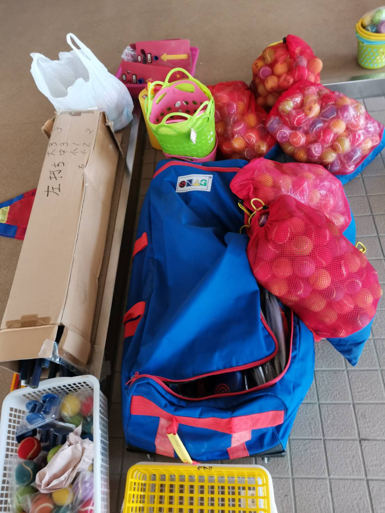
「スナッグさん、これ使わないかね？」
主幹先生はじめ、三ツ城小の先生方が廃校になった学校から道具をたくさん頂いて帰ってくださいました。
ランチャー、ローラー、ランチパット、ボールにフラッグ！こんなに良いんですか？？？
実は今、部費の使い方に頭をひねっていたところ。
助かります！
早速、使わせていただいています。
廃校になった学校の皆様、三ツ城小の先生方、本当にありがとうございました！！
新入部員が入りました！ 2021.6.29
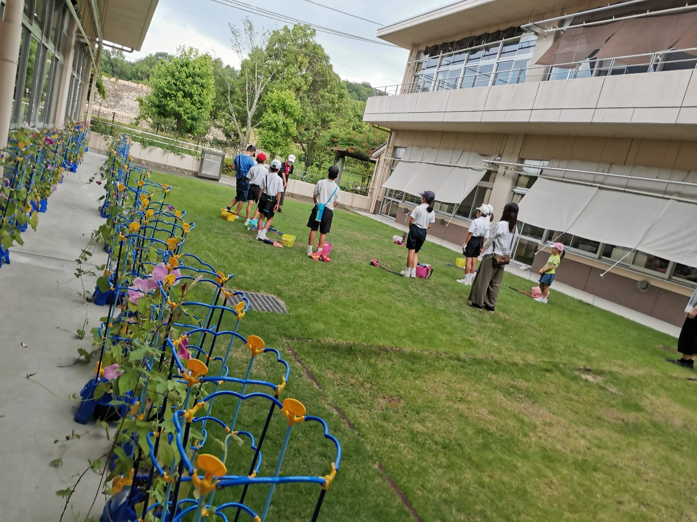
緊急事態宣言が明けて、再始動！
そんな中、2人のかわいい部員が入部してくれました。
低学年のSちゃんとAちゃん。
新しい風！吹いてきた！！
体験の時は、先輩がやさしく教えてくれたよね。
三ツ城の伝統。～先輩は後輩にやさしく～
つないでいこう♪
練習再開 2021.6.21
緊急事態宣言が明けて久しぶりの練習日。
やっぱりいいね！みんなでの練習！！
今日はショートコースを重点的に、相手を思ってのアプローチ、実力テストの練習をしました。
予選会の目標を決めてくる宿題も。
練習が終わって早速書いていたNちゃん。
どんな目標をたてたのかな！？
目標に向かって！！Go for it！！
みんなの笑顔が見られた嬉しい1日でした！
JGTO予選会が始まりました 2021.6.12
昨年はコロナ禍で全国大会が中止され、大きな目標を失った部員達。
今年は新型コロナ対策を徹底し、東日本と西日本の2会場に分かれ、新たな形で第18回スナッグゴルフ対抗戦JGTOカップ全国大会の開催が決まりました。
全ての開催関係者に感謝！！
子ども達に夢を、ありがとうございます！！
我らが広島県予選会は8月1日と8月28日。
緊急事態宣言下で集まっての練習はまだできませんが、各自家練でレベルアップしているよね！？
また、みんなと練習できるのを楽しみにしてま～す♪
JGTOカップ全国大会(外部リンク)